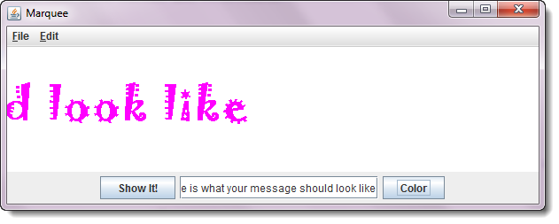

In the last homework, you used buttons, text-fields and events to create an electronic billboard. Now, let's add animation to make it really eyecatching, like the OCC Marquee at the corner of Fairview and Adams.
Widgets and Animation—Marquee
Save the BillBoard program (from H34), changing it's name to Marquee. Then, modify the Marquee program to make the message move as it is displayed:

Here are the instructions:
- Use the instructions in Section 9.5—Introducing Animation to
add a
run()method (with the standard animation loop), and anadvanceOneFrame()method. - When you first position your label, position it off the right side of the screen. As you draw each frame of your animation, move it to the left by two pixels. When the entire label has scrolled off the screen to the left, position it back on the right-hand side again.
- Each time the
advanceOneFrame()method is called, simply change the position of the label. Do not create a new label object.
Run the Check program to test your work.
Here is a video that will give you step-by-step instructions
building the app: